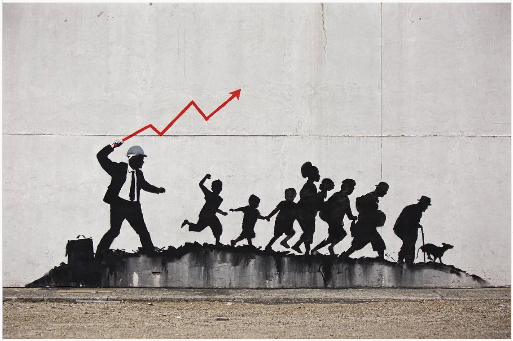
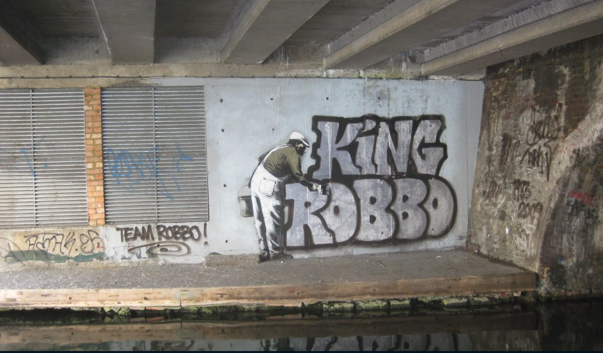

Bansky: искусство или вандализм?
Обостренное чувство справедливости
Работы Бэнкси вскрывают и высмеивают пороки современного общества. Он обнажает самые острые социальные «язвы»: нечестную политику, потребительство, вооруженные конфликты и столкновения.
Нет ничего более опасного, чем кто-то, кто хочет сделать этот мир лучше Бэнкси
Бэнкси

В конце 2015 года Бэнкси побывал в лагере беженцев «Джунгли», расположенном во французском городе Кале, откуда беженцы стремятся перебраться в Великобританию. На стены здания Бэнкси «нанёс» создателя Apple Стива Джобса. Серая невзрачная водолазка, огромный мусорный мешок за спиной и старенькая модель знаменитого компьютера в правой руке. Какое отношение создатель гигантской корпорации имеет к проблеме миграции в Европе? Не каждый знает, что биологический отец Стива Джобса перебрался в США из Сирии во второй половине 20 века.

Джобс
Нас часто заставляют верить, что миграция истощает ресурсы страны, но Стив Джобс был сыном сирийского мигранта. Apple является самой прибыльной компанией в мире, она платит более 7 миллиардов долларов в год налогов – и она существует только потому, что когда-то молодого человека из Хомса пустили в страну
Бэнкси
Общество
В первую очередь, Бэнкси — остросоциальный художник. В его работах высмеиваются пороки общества, причем он делает это в простой форме, доступной каждому. 21 век — время, где нет рамок и ограничений, зато есть множество соблазнов. Художник ничего не придумывает, а только отображает окружающую реальность.
Джентрификация
Перенасыщение рекламой, бессознательное потребительство, отсутствие стремления к творческому и духовному развитию — это и не только встречается в работах художника.
Понимание искусства
А что вообще в современном мире можно назвать искусством?
Кому-то для восприятия искусства нужно громкое имя художника. Кто-то видит скрытый смысл в любом арт-объекте (или думает, что видит). Однозначного отношения к работам Бэнкси нет. Он насмехается над теми, кто видит настоящее искусство только оформленным в позолоченную рамку, освещенную множеством музейных фонариков. Однажды он организовал «тайную» продажу своих работ недалеко от Центрального парка в Нью-Йорке, где каждый мог купить предложенные картине всего за 60 $ за каждую. В результате за день художнику удалось продать восемь картин трем людям.
Banksy vs Robbo
Уже в 16 лет о Роббо, подростке из лондонского муниципального района, говорила вся Великобритания. Этот парень смог разрисовать абсолютно все вагоны лондонского метро без чьей-либо помощи.
Бытует мнение, что противостояние наших героев началось со стычки в баре в начале нулевых. Бэнкси тогда не совсем корректно прокомментировал ажиотаж вокруг Роббо, за что получил сильную пощечину. Эта небольшая стычка положила начало, пожалуй, самому громкому противостоянию граффити и стрит-арта
Власти Великобритании не считали, что граффити несут в себе культурную ценность. Райтеры преследовались по закону, производились аресты, а их работы регулярно отслеживались и закрашивались городскими службами. Еще в 1985 году Роббо оставил свой рисунок под мостом близ канала в Кэмдене. Подобраться туда было крайне сложно.
В граффити-тусовке Роббо считали королем. Огромных размеров портфолио, имевшееся у полицейских, могло отправить Роббо за решетку на приличный срок.
Работа около канала в Кэмдене с каждым годом теряла свой цвет, поверх нее наносились новые тэги, но ее очертания оставались узнаваемыми. Пока Бэнкси не нарушил главное правило уличных художников… В 2009 году он нанес на стену изображение мужчины, заклеивающего белыми обоями граффити Роббо.

Бэнкси закрасил 25-летнее граффити Роббо
Художники и неравнодушные к грубому нарушению объединились в team Robbo и всячески портили работы Бэнкси. Однако правительство считало его труд искусством, а потому поверх них устанавливали защитные стекла, дабы уберечь от повреждений. Это вызвало еще большее негодование уличных райтеров.
Ответ Короля Роббо под мостом в Кэмдене
Почему это государство поддерживает Бэнкси и его стрит-арт, но не оставляет шансов граффити и притесняет их?
В апреле 2011 года Роббо организует свою первую персональную выставку в одной из лондонских галерей под названием «Team Robbo — The Sell Out Tour». Его работы пользуются успехом и активно продаются. Немного позднее он признаётся, что в этом отчасти ему помог конфликт с Бэнкси
Однако через несколько недель Роббо находят на улице с черепно-мозговой травмой, после чего он впал в кому на долгие месяцы. В ноябре 2014 года Бэнкси возвращается к месту их противостояния и воссоздает очертания самой первой работы Роббо, добавляя к нему изображение свечки в виде баллончика с краской.
Выставки и отражение в культуре
В июле 2002 года в Лос-Анджелесе открылась первая персональная выставка Бэнкси — Экзистенсилизм, производное от «существование» (existence) и «трафарет» (stencil). В 2006 году Бэнкси организовал более масштабную выставку в том же городе — «Беарли Лигал».
Огромный ажиотаж вызвал живой слон, раскрашенный под красные обои с золотым орнаментом. Бэнкси хотел обратить внимание зрителя на проблему мировой бедности. За слона переживать не стоит. Его своевременно кормили и поили, использованная краска была нетоксична и не вызывала аллергии, каждую ночь его уводили на отдых и участвовал в выставке он всего три дня. Провокационное событие привлекло внимание звезд арт-индустрии. За три дня проведения выставку посетило более 35 тысяч человек.

Слон в комнате
Несмотря на то, что о личности скандального стрит-арт художника так и нет подтвержденной информации, его работы продолжают вызывать яркую реакцию общества и привлекать внимание неравнодушных к мировым проблемам.